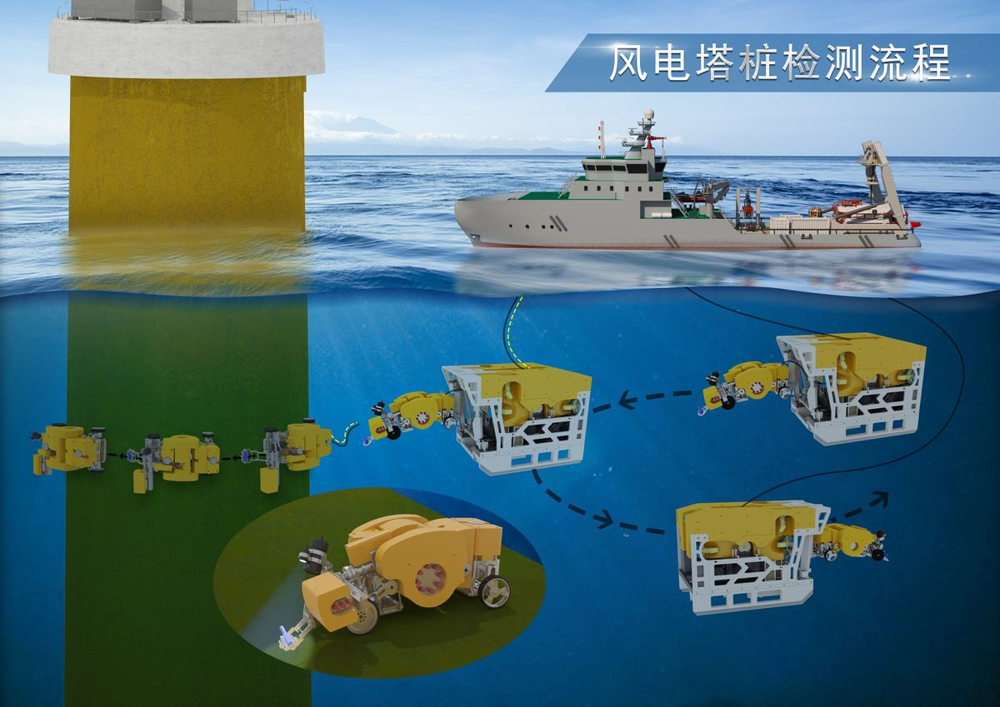
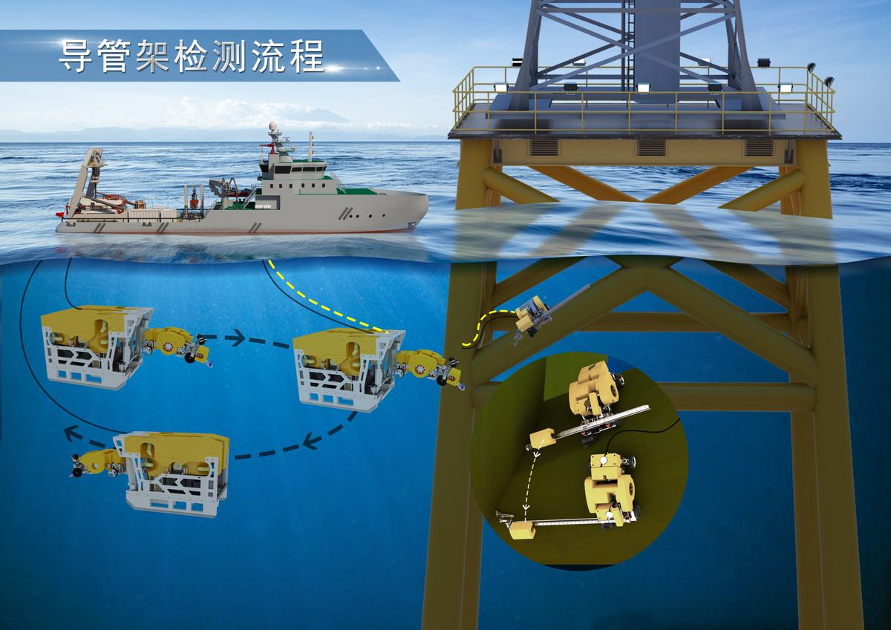

我国海上风电装机容量全球第二，海洋石油天然气开采快速发展，已成为我国能源稳定和经济发展的战略性产业。海洋钢桩包括：海洋导管架平台钢桩和海洋风电塔桩，其长期受到风（台风）、波浪、海流、海冰等交变载荷作用及海水腐蚀，导致水下结构易产生破坏性裂纹，严重降低了海洋钢桩水下结构的强度，给海洋平台和风电装置带来巨大的安全隐患。目前，主要通过人工定期检测排查隐患，但人工检测存在危险性高、检测效率低、重复性差、检测周期长及成本高等问题，本项目研制的海洋钢桩水下检测机器人，通过针对性结构设计和人在环中的半自主检测等技术，实现了导管架平台或风电塔桩水下无人检测。试验和实际应用结果表明，与传统人工检测相比，机器人检测探头可达区域范围更大、检测盲区更小、检测效率大幅度提高，并显著降低了检测成本，解决了人工检测带来的安全隐患。创新性如下：
（1）发明了“水下磁吸变悬挂履带移动系统”和“一种可快速拆装的固定装置及其使用方法”，解决了机器人水下运动精度不高，易打滑和检测仪器快速安装的问题；研发了变磁力吸附机构和力传感器监控软件，保证了机器人行走和检测过程的稳定性；
（2）提出了人在环中的水下半自主检测方法，开发了海洋环境管桩检测路径规划软件，提高了机器人水下检测的自动化程度；
（3）提出了一种由机器人搭载，能够实现检测探头轴向、径向和回转功能的检测机构设计方案，解决了导管架和风电塔桩管径差异大，难以全向覆盖焊缝的难题。
（4）提出了机器人水下耐压和浮力调节设计方案，解决了机器人整体密封、耐压和浮力调节问题，提高了检测可靠性和安全性。
通过与国内外相关机器人相比，本项目在检测性能、检测适应范围、水下变磁力吸附能力及人在环中水下半自主检测方法均超过同类产品。在技术指标方面，最大作业深度300m，扫查管径范围>500mm，负载10kg等均优于同类装备能力水平。同时整体采用永磁铁吸附，有效节约了能源。
该项目填补了国内水下复杂焊缝检测领域的空白。目前，已经在海上完成实际检测任务6次，节支总额达到近900万元。该项目成果已经开始产业化推广，将使海洋钢桩检测工期大幅短、效率、准确率提高和成本大幅降低，保障了海洋平台和风电安全。该项目获得授权发明专利4和软件著作权2项，发表高水平论文4篇。
设计原创性：
（1）水下变磁力吸附技术，变磁力机构三坐标力传感器监控软件获得软件著作权登记证书第05226473号。该技术解决了固定磁铁不易调节磁力，安装卸载困难和工作曲面适应能力差的难题，通过检测时实时同步调节吸附力大小，保证检测过程连续可靠运行；
（2）快速拆装的固定装置，获得国家发明专利，专利名称为一种可快速拆装的固定装置及其使用方法，专利号ZL202010574118.0。该技术解决了检测仪器快速安装的问题，有效提升了检测效率；
（3）水下半自主检测技术，海洋环境管桩检测路径规划软件获得软件著作权登记证书第06050091号。该技术实现了人在环中的半自主检测检测，通过检测数据的实时上传，检测过程可实时人工干预，提高了水下检测作业的自动化程度；
（4）水下爬行机构，获得国家发明专利，专利名称为水下磁吸变悬挂履带移动系统，专利号ZL201910631664.0。该技术结合变磁力吸附技术，解决了水下运动精度不高，易打滑的问题，有效提升了运载平台水下运动的灵活性，保证了检测精度；
（5）大范围管径适应和全向检测结构设计。该技术通过在机体中间设计可调节机构，轴向、径向和回转三个主动自由度设计，并结合两个被动自由度，解决了导管架和风电塔桩管径差异大，难以全向覆盖焊缝的难题；
（6）模块化密封、耐压和浮力配平技术。该技术将运载平台模块化与整体密封、耐压和浮力配平相结合，提升了检测可靠性；
（7）水下检测安全保障系统。该系统将智能监控与检测过程结合，反馈系统实时工作情况，自动处理安全故障，保证水下检测的安全有序进行。

